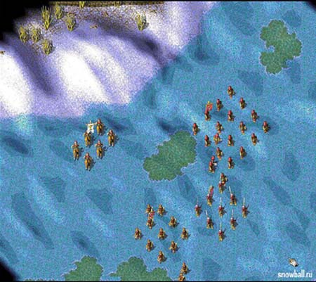
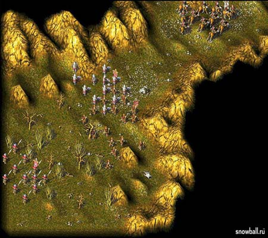
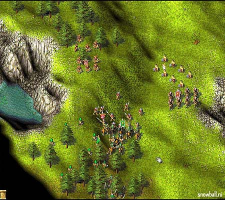
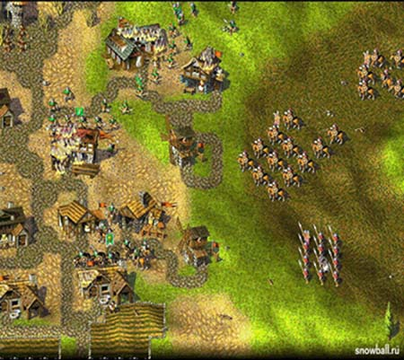

Помню, гулял я как-то по ВВЦ и, проходя мимо одной из многочисленных палаток, увидел компьютерную игру с интригующим названием “Война и мир”. В тот момент я подумал, что разработчики начали делать игры на основе классической литературы великих писателей. Но как только взял коробку в руки, то сразу же понял, что эта “игрушка” к творчеству Л.Н. Толстого не имеет никакого отношения.
Давным-давно в одном далёком королевстве…
Первая часть закончилась, королевство спасено, законный монарх вновь на престоле, а его непослушный сын получил по заслугам. Но на этом беды не закончились, вскоре король Каролус скончался, а за ним и сынок. Благодаря вам (игроку), королевство не было втянуто в новую феодальную войну.

С тех пор прошло несколько спокойных лет и жизнь начала потихоньку налаживаться. Но, как известно, свято место пусто не бывает, и беда снова стучится к нам в двери. Некий Матиас Постимус, принц соседнего королевства обратился к вам с просьбой о помощи. Его батя, король Богарии (соседнее королевство) погиб при странных обстоятельствах во время соколиной охоты. Всё бы ничего, да его сын ещё не достиг совершеннолетия. Ну и тут естественно появились те, кто может проявить своё великодушие и взять “непосильный груз правления на себя” (представители трёх старейших аристократических родов), пока наследник не подрастёт. Мол, молоко на губах ещё не обсохло, а ты уж в короли метишь. Но, наслёдник хоть и мал, но не по годам умён. И через три дня после этой истории обнаружил, что князья, помогающие ему, один за другим отказываются выполнять приказы, поддавшись на щедрые посулы каких то там торговцев. И естественно только вы Сенешаль (игрок) можете помочь молодому принцу вернуть себе власть. Если вы согласны, то не теряйте времени и бегите в ближайший магазин за игрой “Вторая корона”, но вначале причтите эту статью.

Это add-on?
Графика в компьютерной игре. Эта тема сильно волнует любого нормального геймера. Хочу вас разочаровать, а может и обрадовать. Во Второй короне осталось всё совершенно на том же уровне как и в предыдущей части. Опять старый добрый вид сверху, без любого намёка на 3D графику, не знаю может оно и лучше. Война и мир всегда поражала меня своей детализацией объектов. Если вашему подданному захотелось перекусить и он отправился в столовую вы без проблем увидите что он кушает (булку, пьёт вино или нагло ест колбасу). Кстати насчёт еды, во Второй короне появился новый вид питания, но об этом чуть попозже. Если бы существовала какая то классификация игр, я бы отнёс Войну и мир и Вторую корону в одну группу со серией Затерянный мир и играми Settlers 3 и 4. В отношении графики конечно. Но по моему мнению, для 2002-го года эта графика несколько устарела и неплохо было бы изменить её в лучшую сторону конечно.
У нас пополнение!!!
Молодцы разработчики я вам скажу. Не сунули геймеру один только новый сюжет. Графика та же, но хоть разнообразили ряды нашей доблестной армии и населения. Так на месте не стоит и архитектура, появились новые виды построек, но обо всё попорядку.

Армия. Появилось новое здание Муниципалитет, в котором вы без всяких доспехов, топоров и прочих рекрутов, за скромную плату, наймёте себе солдат. Бунтарь – выглядит как обыкновенный скотовод и дерётся вилами (ВО! Это по-русски!!!), плата один сундук золота. Ополчение – обыкновенный мужик, дерущийся топором (известный по предыдущей части), стоит подороже два сундука. Бродяги - оборванцы, стреляющие из лука, два сундука золота. Сквайры – похожи на разведчиков из прошлой части, передвигаются на коне и дерутся топором, а тут придётся раскошелиться, отдать три сундука золота. Ещё один вид войск, которых вы сможете нанять в муниципалитете это варвары. Помните тех могучих полуголых мужиков с огромными топорами в предыдущей версии, вот это именно они. Такое ощущение как будто бы разработчики прочитали мои мысли и дали возможность нанять этих зверей! За них вы отдадите четыре сундука. Ну и последний вид это воители, те же самые варвары, но облачённые в латы, сражаются они всё при помощи тех же топоров. Стоят столько же, сколько и варвары. Ещё одно военное здание это цех осадных орудий. (Наконец-то!)Теперь вы сможете производить, с помощью столяра, катапульты и баллисты. Тратится на это железо и дерево. Здесь новшества в области военных строений, техники и живой силы заканчиваются. Обидно. Мирные нововведения. Тут всё ещё более скупо, чем в армии. Единственная новая мирная постройка это домик рыбака, и естественно его обитатель сам рыбак, который ловит удочкой рыбу в водоёмах, несёт домой и передаёт носильщикам – слугам. Несмотря на все эти новые постройки и виды войск, мне кажется, что разработчики поскупились, можно было бы ещё добавить хотя бы пару построек и убрать совершенно ненужные. Например, наличие дорог, я считаю, совсем не обязательным, и даже ненужным из-за них игрок тратит уйму времени, которое можно использовать более разумно. Но видно разработчики считают по-другому. Приведу простой пример. Все, наверное, помнят игру Settlers 2, так вот в третей части этой игры от дорог отказались и правильно сделали, а тут… Обидно.
Хочется добавить пару слов о нашем великом и могучем (нет, не о русском языке) искусственном интеллекте. Знали бы вы сколько я потратил времени выискивая хоть какое то поумнение противника, но, к сожалению, все мои труды оказались тщетны. AI во Второй короне остался на прежнем уровне. Снова враг нападает редко, большими группами, снова чтобы выиграть миссию надо наклёпать огромное количество мечников и прочих воинов и всей этой группой ломонуться в сторону вражеской базы. Расставив позади этой толпы метких лучников или арбалетчиков. В третьем тысячелетии хочется всё-таки более реалистичной стратегии. Чтобы брать не числом, а умом как великие полководцы.

Запевай!!!
Хотите раскрою вам секрет? Игра Война и мир мне понравилась не только за красивую графику и общую сбалансированность и продуманность, но и за классную и успокаивающую музыку. Милая, не надоедающая и разнообразная, что очень важно в играх! А во Второй короне добавлено целых четыре новых звуковых трека. За это я готов аплодировать разработчикам. Теперь пару слов о звуке, да говорить то собственно не о чем, всё как в предыдущей версии. Солдаты подтверждают приказы, отзываются если вы их кликните (мышкой), мечи бренчат как положено. Если перед вами кузница, вы слышите как кузнец стучит молотком по мечу. Если плавильная, то звуки кипящего металла. Ну и всё в таком духе. На звук и музыку во Второй короне ругаться не у кого рот не откроется.
Как я научился командовать.
Интерфейс. И тут говорить не о чем. Всё идентично первой версии. Кстати по моему правильно, что разработчики ничего не изменили в интерфейсе. Когда всё идеально то и менять ничего не нужно, чтобы не напортить. Если хотите выпустить какого ни будь рабочего, кликнем на школу и на соответствующую картинку рабочего. То же самое и с военными, только выберем казарму. Также проводятся все операции с другими зданиями. Вначале нужно нажать на дом, а потом менять что- либо. Управление осуществляется с помощью мыши и клавиатуры, что очень удобно.
Вторая корона add-on?
Что же в итоге? А мы получили хорошую игру – продолжение. Она может выступать как в роли самостоятельной игры, так и в роли продолжения. Поклонники будут рады вновь сразиться и помочь дружественному нам королевству, а новички не знакомые с игрой Война и мир, будут рады поиграть в новую игрушку, правда с несколько устаревшей графикой. Можно сказать однозначно. Хорошо, что эта игрушка вышла и не важно, что это add-on или вторая часть, потому что это Война и мир. Эти всё сказано. А на этом позвольте откланяться и выставить рейтинг.